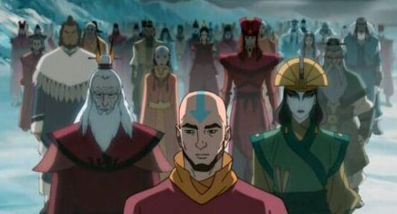

Avatar: The Last Airbender
Avatar: The Last Airbender is set in a world where human civilization consists of four nations, named after the four classical elements: the Water Tribes, the Earth Kingdom, the Fire Nation, and the Air Nomads. In each nation, certain people, known as "benders" (waterbenders, earthbenders, firebenders and airbenders), have the ability to telekinetically manipulate and control the element corresponding to their nation, using gestures based on Chinese martial arts. The "Avatar" is the only individual with the ability to bend all four elements. The Avatar is an international arbiter whose duty is to maintain harmony among the four nations, and act as a mediator between humans and spirits. When the Avatar dies, their spirit is reincarnated in a new body, who will be born to parents in the next nation in a set order known as the Avatar cycle: Fire, Air, Water, and Earth. By tradition, the new Avatar will travel the world to learn all four bending arts, after which they will begin in earnest their role as global peacekeeper. The Avatar can enter a condition known as the "Avatar State", in which they temporarily gain the skills and knowledge of all their past incarnations. Although this is when they are at their most powerful, if the Avatar was ever killed while in the Avatar State, the reincarnation cycle would be broken and the Avatar would cease to exist.
Themes
The series addresses many topics rarely touched on in youth entertainment, including issues relating to war, genocide, imperialism, colonialism and totalitarianism, gender discrimination and female empowerment, marginalization and oppression, spirituality, as well as the philosophical questions surrounding fate, destiny and free will. The show is set during a period in which the world is engulfed in an imperialistic war initiated by the Fire Nation. While war is a constant backdrop, the show depicts these effects through the eyes of common people—the oppressed Earth Kingdom citizens as well as indoctrinated Fire Nation schoolchildren—to show how war makes victims of everyone. While the Fire Nation is presented as the instigator of violence, the show also depicts the systemic inequality experienced by residents in the Earth Kingdom city of Ba Sing Se as well as the nefarious activities of the city's secret police. These situations show the corrupting nature of power and the nuances of good and evil. The show introduces viewers to genocide early on when protagonist Aang visits his former home in the Southern Air Temple. He arrives to discover his people have been massacred and displays a range of emotions, from rage to loss.
Influence
The gestures used by the "bender" characters are derived from Chinese martial arts, for which the creators employed Sifu Kisu of the Harmonious Fist Chinese Athletic Association as a consultant. Each fighting style is unique to the "benders" who use them or characters who are aligned to a certain element. For example, practitioners of "waterbending" use movements influenced by T'ai chi and focused on alignment, body structure, breath, and visualization. Hung Gar was the inspiration for practitioners of "earthbending", and was chosen for its firmly rooted stances and powerful strikes as a representation of the solidity of earth. Northern Shaolin, which uses strong arm and leg movements, was chosen to represent "firebending". Ba Gua, which uses dynamic circular movements and quick directional changes, was used for "airbending". The Chu Gar Southern Praying Mantis style can be seen practiced by the earthbender Toph, who develops a unique fighting style as a result of her blindness.
Avatar: The Last Airbender has an expansive soundtrack produced by the Track Team. All the background compositions, character themes, and songs in the world of Avatar play an important part in molding the atmosphere of each episode. Feelings of happiness, suspense, regret, love, action, and many more are projected to the senses through music, making the soundtrack an important aspect of series production. The soundtrack of Avatar has many Eastern influences, considering that the show contains many connections to Eastern culture.